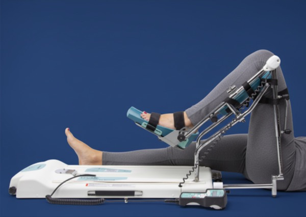
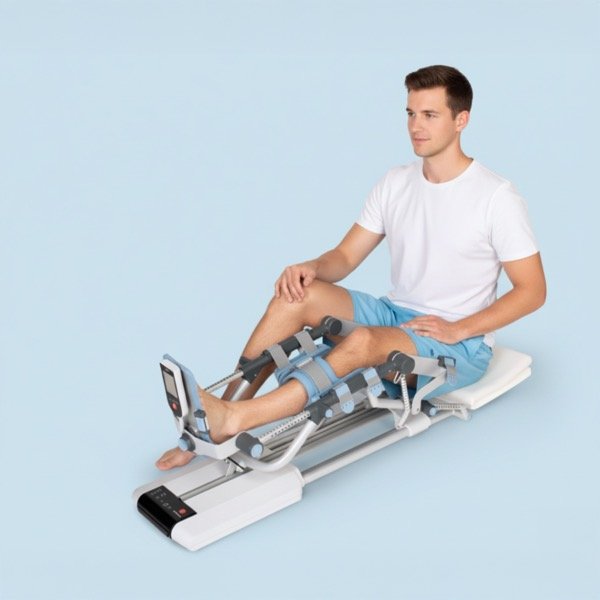
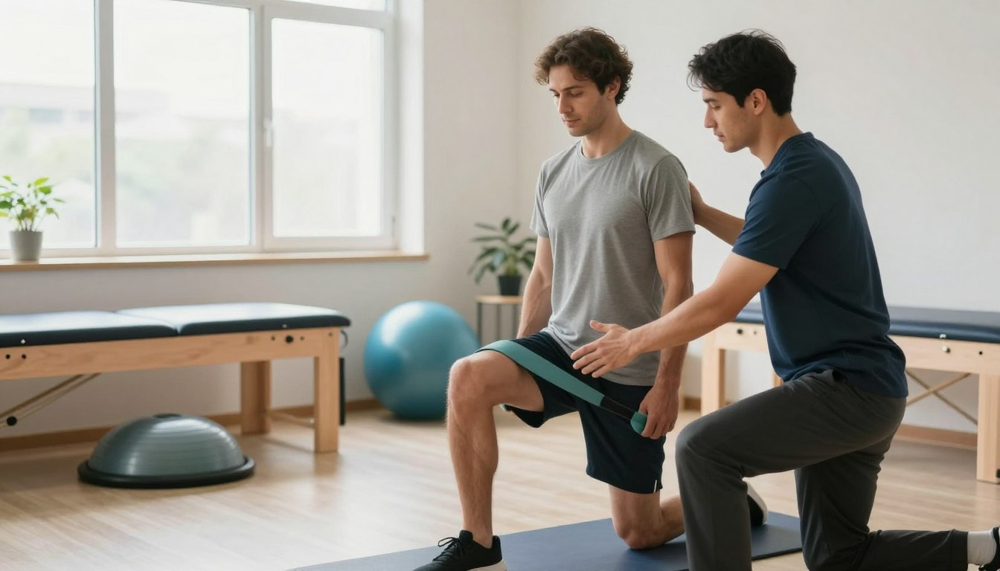

Kinetek aparat spada u skupinu medicinskih uređaja za rehabilitaciju, poznatih kao uređaji za kontinuirano pasivno razgibavanje (Continuous Passive Motion - CPM). To je sofisticirana tehnologija koja je razvijena kako bi pacijentima pomogla u ranoj fazi oporavka nakon operacija ili ozljeda koljena i kuka.
Za razliku od aktivnih vježbi gdje pacijent sam pokreće zglob, kod Kinetek aparata riječ je o pasivnom pokretu - uređaj lagano pomiče nogu u unaprijed podešenom rasponu pokreta, bez da pacijent ulaže vlastiti napor. Upravo zbog toga je ovaj aparat posebno koristan u fazi kada mišići i zglobovi još nisu spremni za aktivno opterećenje.
Ako želite saznati više o terapiji kontinuiranim pasivnim razgibavanjem (CPM terapiji) kao jednoj od najučinkovitijih metoda u području fizikalne terapije, posjetite našu stranicu Fizikalna terapija - terapija pasivnim razgibavanjem.
Kontaktirajte nasU praksi, korištenje izgleda vrlo jednostavno: pacijent legne na krevet ili sjedi u udobnom položaju, a noga se postavlja u držače aparata. Kinetek zatim nježno savija i ispruža nogu, pod kutovima koje je moguće precizno namjestiti.
Kut pokreta određuje se prema preporuci liječnika ili fizioterapeuta - u početku su to mali pokreti, a s vremenom se raspon povećava.
Brzina pokreta također se prilagođava stanju pacijenta, tako da terapija nikada ne uzrokuje bol niti pretjerano opterećenje.
Trajanje tretmana obično se kreće od 1 do nekoliko sati dnevno, ovisno o fazi rehabilitacije.
Na taj način zglob je stalno u pokretu, što donosi niz medicinski dokazanih koristi.
Redovitom primjenom Kinetek aparata zglob se brže razgibava, čime se skraćuje ukupno vrijeme rehabilitacije. Pacijenti koji koriste CPM terapiju često postižu puni raspon pokreta znatno prije nego oni koji se oslanjaju isključivo na aktivne vježbe u ranoj fazi oporavka.
Kontinuirani pasivni pokret potiče protok krvi kroz operirano područje, čime se smanjuje rizik od nastanka krvnih ugrušaka (duboke venske tromboze), koji je povećan nakon kirurških zahvata na donjim ekstremitetima. Poboljšana cirkulacija također pomaže bržem cijeljenju tkiva.
Nježan, kontrolirani pokret pomaže u smanjenju postoperativnog otoka i boli. Pokretanjem zgloba potiče se odvodnja tekućine iz tkiva i smanjuje se upalni odgovor, što pacijentima omogućuje ugodniji oporavak.
Jedna od najčešćih komplikacija nakon operacije koljena ili kuka je stvaranje priraslica i ukočenost zgloba. Kinetek aparat kontinuirano razgibava zglob, čime se sprječava nastanak fibroznog tkiva koje ograničava pokretljivost. To je posebno važno u prvim tjednima nakon operacije.
Osim u bolničkom okruženju, aparat se sve češće koristi i u kućnim uvjetima, što pacijentima omogućuje provođenje terapije u udobnosti vlastitog doma, uz smanjene troškove i veću fleksibilnost.

Svaki pacijent je jedinstven, a Kinetek aparat omogućuje potpunu prilagodbu terapije individualnim potrebama. Tri su ključna parametra koja se podešavaju:
Kut savijanja - raspon pokreta se postupno povećava prema napretku pacijenta. U početku se koriste manji kutovi (npr. 30-40 stupnjeva), a cilj je postupno doseći puni raspon pokreta.
Brzina pokreta - brzina kojom uređaj pomiče nogu prilagođava se toleranciji pacijenta. Sporiji pokreti su ugodniji i preporučuju se u ranoj fazi oporavka.
Trajanje terapije - ovisno o fazi rehabilitacije i preporukama liječnika, terapija može trajati od jednog do više sati dnevno, raspoređenih u jednu ili više sesija.
Kinetek aparat dizajniran je s naglaskom na sigurnost i udobnost pacijenta. Uređaj ima ugrađene sigurnosne mehanizme koji sprječavaju prekomjerno savijanje ili ispružanje zgloba. Pacijent u svakom trenutku može zaustaviti uređaj pomoću ručnog upravljača. Mekani potpornji i anatomski oblikovani držači osiguravaju ugodno korištenje tijekom duljih sesija terapije.
Najčešća primjena Kinetek aparata je rehabilitacija koljena. Koljeno je složen zglob koji zahtijeva pažljiv pristup oporavku, a CPM terapija se pokazala kao izuzetno učinkovita metoda u postoperativnoj rehabilitaciji.
Osim za koljeno, dostupni su i modeli prilagođeni za rehabilitaciju kuka i lakta, čime se pokriva širok spektar ortopedskih potreba.

Preko 2000 zadovoljnih klijenata
Kupnja medicinskog uređaja poput Kineteka predstavlja značajan financijski izdatak, pogotovo ako se koristi samo tijekom ograničenog perioda rehabilitacije. Upravo zato sve više pacijenata i zdravstvenih ustanova bira najam kao praktičnije i pristupačnije rješenje.
Najam Kinetek aparata omogućuje vam pristup profesionalnoj CPM terapiji bez velikog ulaganja. Naši uređaji su redovito servisirani, dezinficirani i spremni za korištenje. Dostava je moguća na adresu u cijeloj Hrvatskoj.
Fleksibilno trajanje najma prilagođavamo vašim potrebama, bilo da se radi o tjednom ili mjesečnom najmu. Cijena najma kreće od 10 eura po danu, a uz svaki aparat dobivate detaljne upute za korištenje i stručnu podršku.
Za sve informacije o najmu, cijenama i dostupnosti, slobodno nas kontaktirajte putem WhatsAppa ili emaila.
KINETEK NAJAM